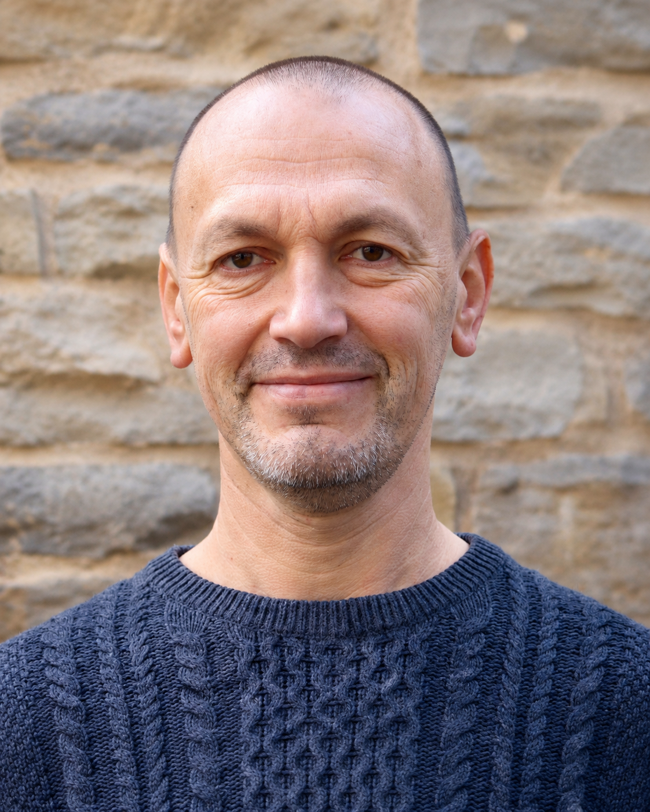

Warum ich das mache
Ich kenne das Leben von innen
Ich bin Vater und seit fast 25 Jahren Ehemann. Ich habe Sucht erlebt und überwunden. Ich war oft unten – und bin immer wieder aufgestanden. Lösungswege finden ist meine Natur.
Vom Kaufmann zum Maschinenbautechniker, vom Techniker zum Projektleiter, vom Projektleiter zum Focusing-Therapeuten in die Selbstständigkeit – mein Leben war nie geradlinig. Aber jeder Schritt hat mich zu dem gemacht was ich heute bin.
Ich begleite keine Fälle. Ich begleite Menschen.
Als zertifizierter Focusing-Therapeut (DFI) mit hypnosystemischer Grundlage arbeite ich mit dem was da ist – deiner Geschichte, deinem Körper, deinem Tempo.